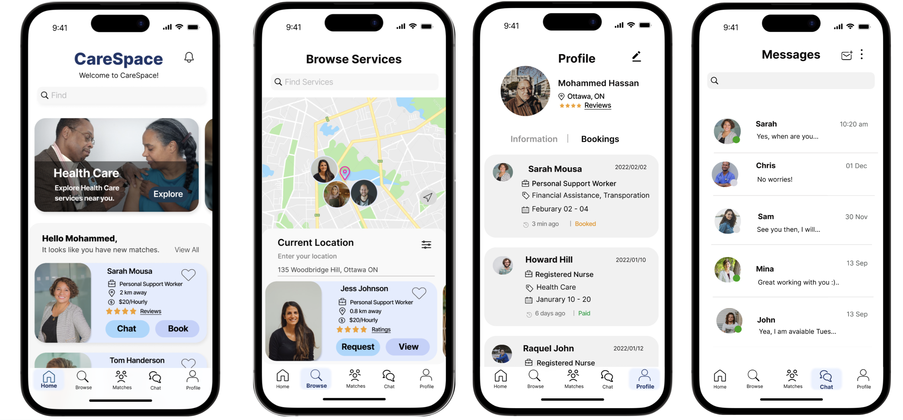

A personalized goals checklist based on React JS hosted through Netlify. Implemented the use of local storage,
event listeners and UseState.
Music Playlist
HTML, CSS, JS
A Vanilla JS based web application of a personalized music playlist.
This web app inclues mp3 files with css animations, Javascript-powered controls and is hosted
through Netlify.

CareSpace Prototype
Figma, UX, UI
My UX design process for an iOS mobile application called CareSpace.
CareSpace represents a network agency to find in-home care services for elderly people.